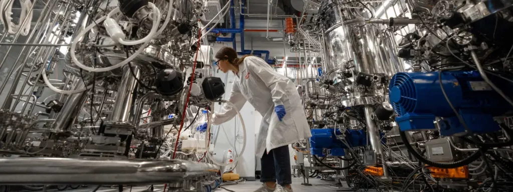

“ကျွန်တော်တို့ရဲ့ရည်ရွယ်ချက်ကတော့ ဓါတ်ခွဲခန်းမွေး အသားကို လူတိုင်း လက်လှမ်းမှီနိုင်ဖို့ ဖြစ်ပါတယ်။ ဒီလို ထုတ်လုပ်ရာမှာ အရသာလဲ ရှိပြီး ကျန်းမာရေးနဲ့လဲ ညီညွတ်တဲ့ အသားမျိုး ထုတ်လုပ်ဖို့ပါ။ ပြီးတော့ သဘာဝပတ်ဝန်းကျင်အတွက်လဲ ရေရှည် အကျိုးရှိပြီး အနာဂါတ် လူသားတွေအတွက် ကောင်းကျိုးဖြစ်လာစေဖို့လဲ ရည်မှန်းထားပါတယ်” လို့ ဒီကုမ္ပဏီရဲ့ အကြီးအကဲ တစ်ဦးဖြစ်တဲ့ ယာကွတ် နာမီယာစ် (Yaakov Nahmias) က ပြောပါတယ်။
ဘာလို့ သဘာဝ ပတ်ဝန်ကျင်ကိုရေရှည် အကျိုးဖြစ်ထွန်းစေဖို့က အရေးကြီးတာပါလဲ။ ကမ္ဘာတဝန်းလုံးက အသား လိုအပ်ချက်က တနေ့တခြား မြင့်တက်လို့ လာနေပါတယ်။ ဒါပေမယ့် ယခုလက်ရှိ ရှေးရိုးစဉ်လာ ကျင့်သုံးနေတဲ့ တိရိစ္ဆာန်တွေကို မွေးမြူပြီး သတ်ဖြတ်စားသောက်တာက သဘာဝ ပတ်ဝန်းကျင် အတွက် သိပ်မကောင်းလှသလို ရက်စက်ရာလဲ ကျနေပါတယ်။
အပင်တွေကနေ ထုတ်တဲ့ အသားတုတွေတော့ ရှိပါတယ်။ ဒါပေမယ့် အသား အစစ်လို အရသာကော အသွင်းအပြင်ရောက မယှဉ်နိုင်အောင် ကွာလွန်းပါတယ်။ အသားကြိုက်သူ အများစုကလဲ အပင်ကနေ လုပ်တဲ့ အသားတုတွေကို နှစ်သက်ကြခြင်း မရှိပါဘူး။
ဒါပေမယ့် ဓါတ်ခွဲခန်းမှာ မွေးတဲ့ အသားကတော့ အသား အစစ်နဲ့ မခြားပါဘူး။ မခြားဆို ဖွဲ့စည်းထားတဲ့ ဆဲလ်တွေ မော်လီကျူးတွေက အတူတူပဲကိုး။ အရောင်အသွေး၊ အသွင်အပြင်၊ အရသာ အားလုံးဟာ တိရိစ္ဆာန်က ရတဲ့ အသားအတိုင်းပါပဲ။ ဒါပေမယ့် ဓါတ်ခွဲခန်းမှာ အသားမွေးတာဟာ သဘာဝ ပတ်ဝန်းကျင် ထိခိုက်ပျက်စီးမှု မရှိစေ သလို တိရိစ္ဆာန် တွေအပေါ်မှာလဲ ကျင်နာသနားရာ ရောက်ပါတယ်။
ဓါတ်ခွဲခန်းမှာ အသားမွေးတယ်ဆိုတာ အသားကို ပွားယူတာ ဖြစ်ပါတယ်။ မူလအခြေခံက တိရိစ္ဆာန်ကရတဲ့ အသားစပါ။ အဲ့ဒီ အသားစကိုမှ ဓါတ်ခွဲခန်းထဲ အစာကျွေးပြီး ဆဲလ်တွေ। တစ်ရှူးတွေ ပွားယူတာ ဖြစ်ပါတယ်။

ဒါပေမယ့် ဒီနှစ်အနည်းငယ် အတွင်းမှာပဲ ဓါတ်ခွဲခန်းမွေး အသားတွေရဲ့ တန်ဖိုးဟာ သိသိသာသာ ကျဆင်းလို့ လာပါတယ်။ ဒါပေမယ့်လဲ အခုအချိန်ထိတော့ တိရိစ္ဆာန်က ရတဲ့ အသားထက်တော့ သိသိသာသာ ဈေးများနေ တုန်းပါပဲ။ ဒါ့ကြောင့် လူအများစုကတော့ ဈေးသက်သာတဲ့ တိရိစ္ဆာ အသားကိုပဲ ရွေးအုံးမှာ ဖြစ်ပါတယ်။
အခု Future Meat ရဲ့ စက်ရုံကနေ တစ်ရက်ကို အသား ပေါင် ၁,၀၀၀ ထုတ်နိုင်မယ်လို့ ဆိုပါတယ်။ ဒါက သိပ်များလှတဲ့ ပမာဏတော့ မဟုတ်သေးပါဘူး။ အသားအနေနဲ့ ကြက်သား၊ ဝက်သားနဲ့ သိုးသားတွေကို ထုတ်လုပ်မှာ ဖြစ်ပြီး နောက်ပိုင်း အမဲသားကိုပါ တိုးချဲ့ထုတ်လုပ်သွားမယ်လို့ သိရပါတယ်။
လက်ရှိ တစ်ရက် အသားပေါင် ၁,၀၀၀ နှုန်းနဲ့ ထုတ်လုပ်မယ်ဆို ဓါတ်ခွဲခန်းမွေး အသားရဲ့ ဈေးနှုန်းကလဲ အခုလက်ရှိ ဈေးထက် ကျဆင်းလာမှာ ဖြစ်ပါတယ်။ နောက်ပိုင်း စက်ရုံထပ်မံ တိုးချဲ့ပြီး ထုတ်လုပ်မှု တိုးမြှင့်လာနိုင်ရင် ကုန်ကျစားရိတ် ပိုသက်သာလာမယ် လို့ ဆိုပါတယ်။
လက်ရှိမှာ ဒီစက်ရုံက ထွက်တဲ့ ၄ အောင်စ အလေးချိန်ရှိ ကြက်ရင်ပုံ တစ်ခုကို အမေရိကန် ဒေါ်လာ ၃.၉၀ နဲ့ ရောင်းချပေးမှာ ဖြစ်ပါတယ်။ ဒါဟာ ဓါတ်ခွဲခန်းမွေး အသားအတွက် အရင်ထက် စာရင် သိသိသာသာ သက်သာတဲ့ ဈေးဖြစ်ပါတယ်။
ဒါပေမယ့် ဒီဈေးက သာမန် ကြက်ခြံ တစ်ခုကနေ ထွက်တဲ့ ကြက်ရင်ပုံ ဈေးထက်တော့ ၅ ဆလောက် များနေပါသေးတယ်။ သာမန် ကြက်ရင်ပုံ တစ်ခုက အခုဈေးရဲ့ ၁/၅ လောက်ပဲ ဈေးရှိတာပါ။ နောက်ပြီး ဓါတ်ခွဲခန်းမွေး အသားက ဆိုင်တိုင်းမှာလဲ အလွယ်တကူ ဝယ်လို့ မရနိုင်သေးပါဘူး။
လက်ရှိအချိန်ထိတော့ ဓါတ်ခွဲခန်းမွေး အသားတွေကို ဈေးဆိုင်တွေမှာ တင်ပြီး ဖြန့်ချီရောင်းချခွင့်ပြုချက်ကို စင်ကာပူ တစ်နိုင်ငံထဲမှာပဲ ခွင့်ပြုချက် ရပါသေးတယ်။ ဒါပေမယ့် မကြာမီမှာ နိုင်ငံအများအပြားမှာ ဓါတ်ခွဲခန်းမွေးမြူရေး အသားတွေ ဈေးဆိုင်တွေမှာ တင်ပြီး ရောင်းချတာ တွေ့လာရလိမ့်မယ်လို့ ခန့်မှန်းကြပါတယ်။ ဓါတ်ခွဲခန်း အသားမွေးတဲ့ ကုမ္ပဏိ အတော်များများဟာ အစားအစာနဲ့ ဆေးဝါးကြီးကြပ်မှု ဌာန (Food and Drug Administration) ရဲ့ ခွင့်ပြုချက်ကျဖို့ စောင့်ဆိုင်းနေကြပြီး ဒီနှစ်မကုန်မီ အများအပြား ခွင့်ပြုချက် ရကြမယ်လို့ မျှော်လင့်လျှက် ရှိကြောင်းပါ။
Reference: Cultured meat is now being mass-produced In Israel